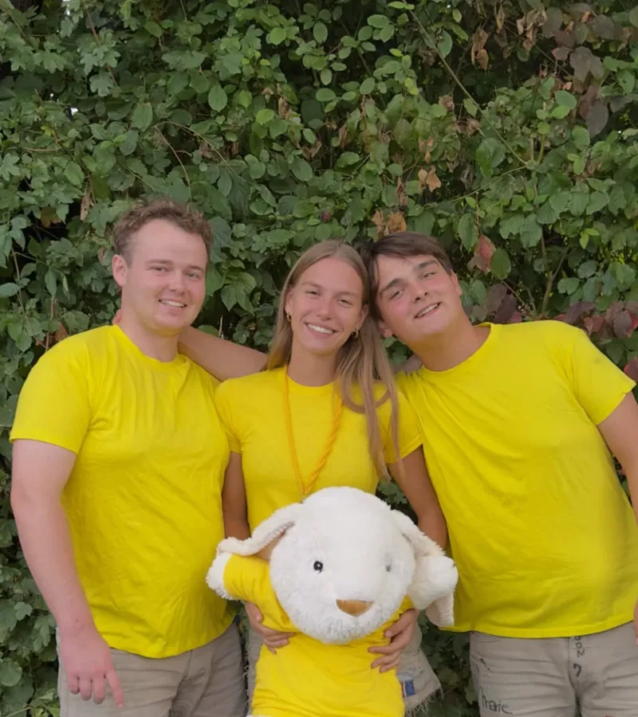
Speelclub
6 – 9 jaar
De jongste spelers. Veel spel, knutselen en verkleden, en elke zondag een nieuw avontuur.
Leiding Manu, Marie, Nolan & Catho
Elke zondag · 14u – 18u · Stroppen
Bij Chiro Halle is iedereen van 6 tot 18 jaar welkom. Groot, klein, ros, blond: bij ons valt niemand uit de boot.
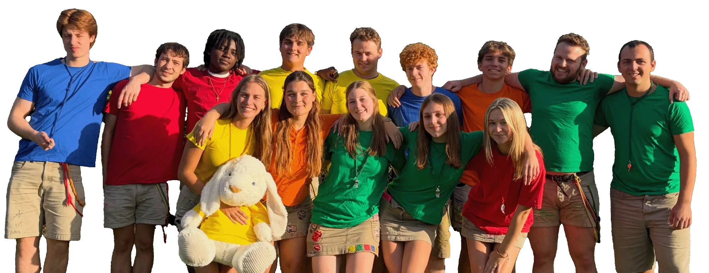
Wie zijn we
Chiro Halle is een jeugdbeweging voor jongens en meisjes van 6 tot 18 jaar. De leden zitten in afdelingen volgens leeftijd, en elke afdeling wordt begeleid door enthousiaste leiding van minstens 18 jaar. Wie 18 wordt, kan zelf leiding worden.
Onze leiding doet dit helemaal vrijwillig en volgt zoveel mogelijk cursussen van Chirojeugd Vlaanderen. We willen dat elk kind net zulke toffe zondagen beleeft als wij vroeger: aan motivatie geen gebrek!
Afdelingen
Elke afdeling heeft haar eigen kleur. Kies het geboortejaar van je kind en ontdek waar het terechtkomt.

6 – 9 jaar
De jongste spelers. Veel spel, knutselen en verkleden, en elke zondag een nieuw avontuur.
Leiding Manu, Marie, Nolan & Catho
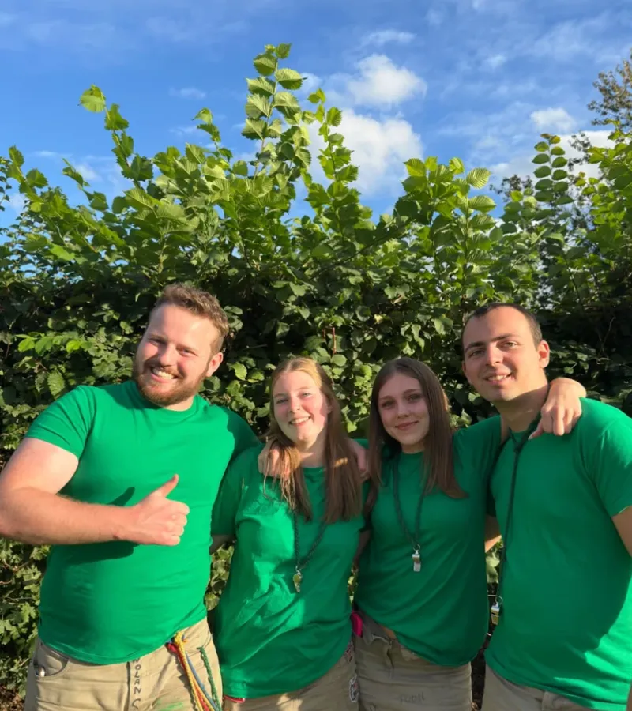
9 – 12 jaar
Ravotten in het bos, grote spelen en altijd klaar voor een uitdaging.
Leiding Toon, Febe, Léa & Lorenzo
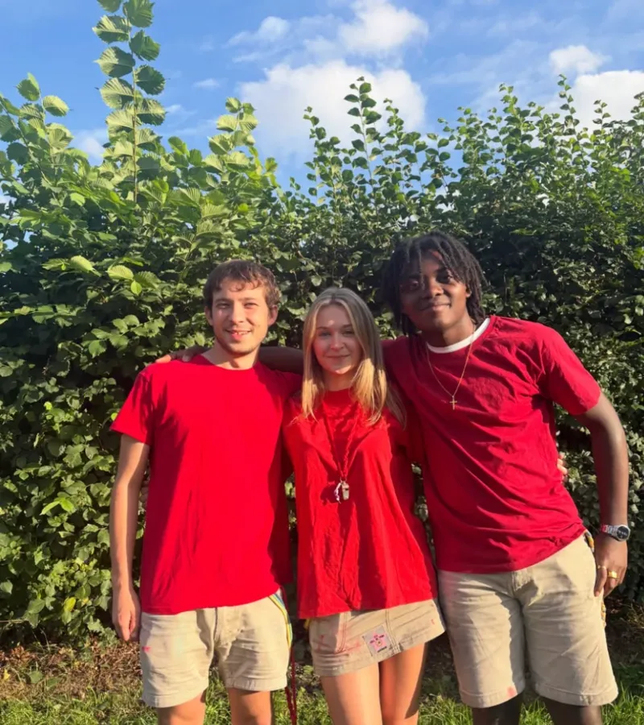
12 – 14 jaar
Meer zelf beslissen, grotere tochten en samen met je vrienden zotte plannen smeden.
Leiding Joren, Emma & Heri
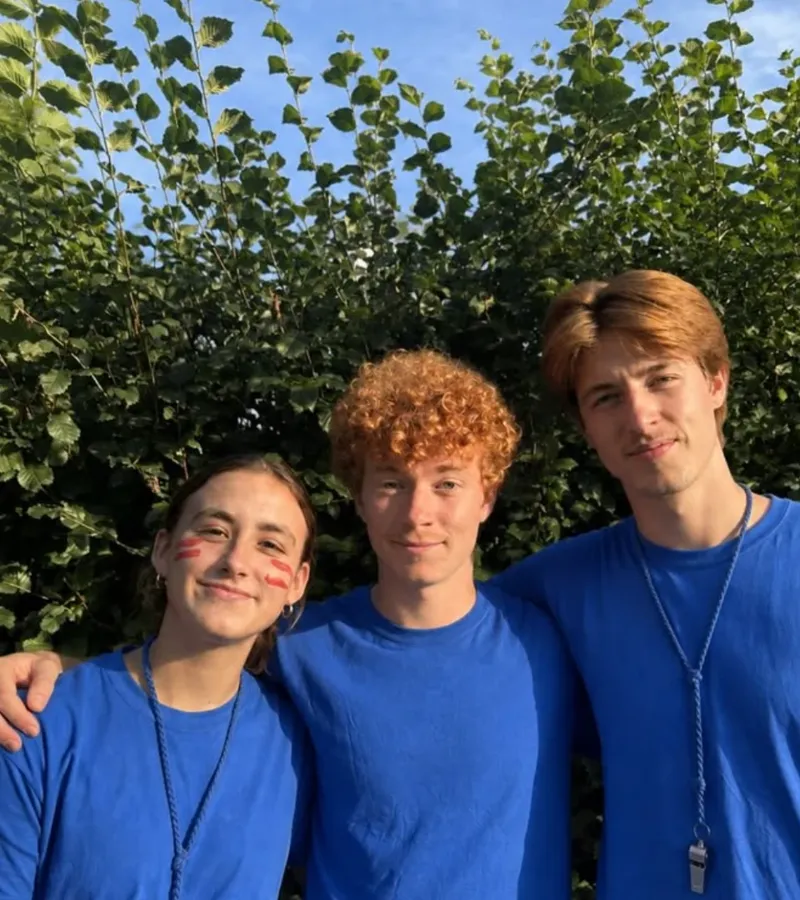
14 – 16 jaar
Uitdagende activiteiten en weekends die je zelf mee op poten zet.
Leiding Joke, Mano & Rik
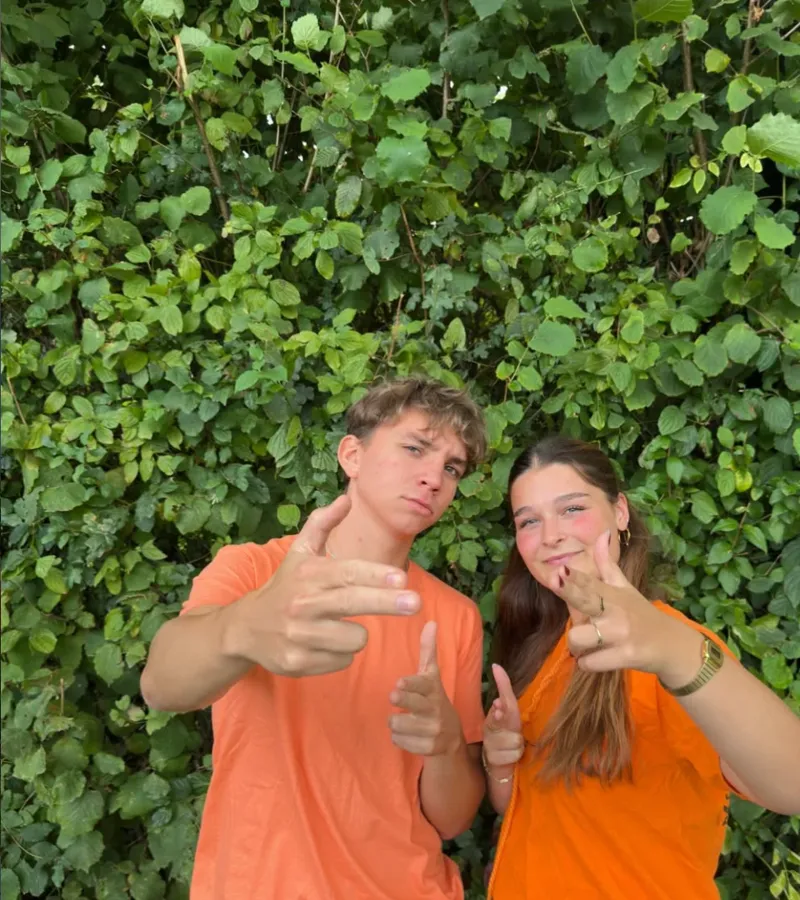
16 – 18 jaar
De oudste leden. Eigen projecten en klaarstomen om zelf leiding te worden.
Leiding Warre & Jade
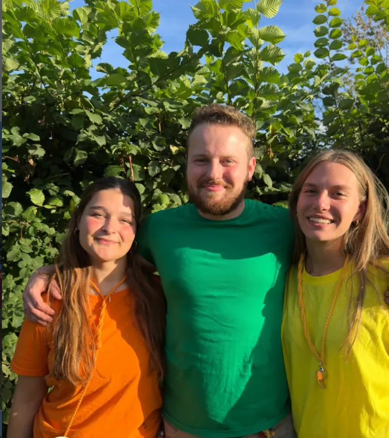
Groepsleiding
Zij houden de hele Chiro draaiende en zijn je aanspreekpunt voor alle vragen.
Activiteiten
Elke zondag van 14u tot 18u spelen we in onze lokalen op Stroppen, tenzij we op uitstap zijn.
Een groepsactiviteit, een dag naar zee, een pastafestijn… er valt elke week iets te beleven.
Om de twee jaar trekken we met z'n allen een weekend op verplaatsing: een mini-kamp om te proeven.
Elk jaar van 21 tot 31 juli sluiten we het Chirojaar af met een onvergetelijk kamp.
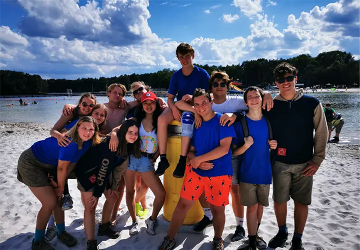
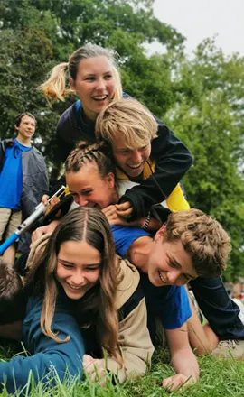
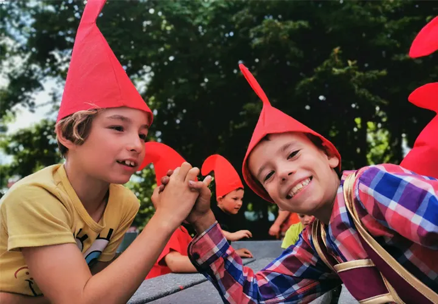
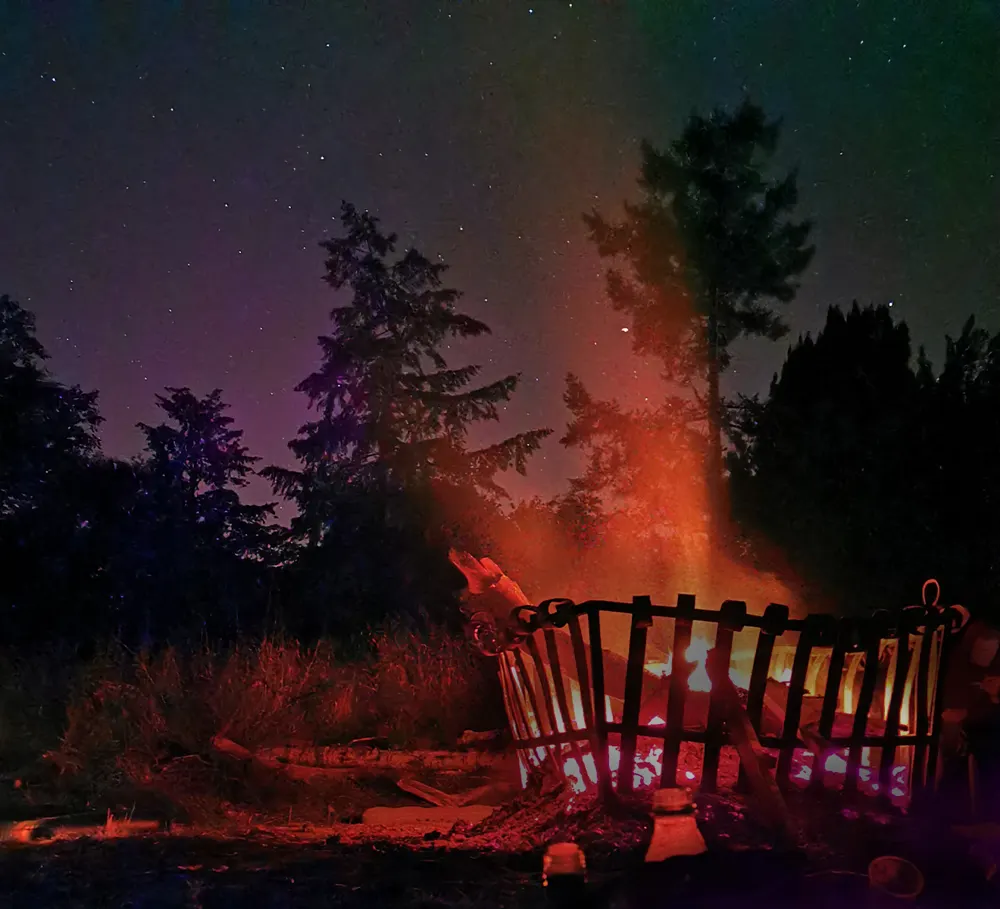
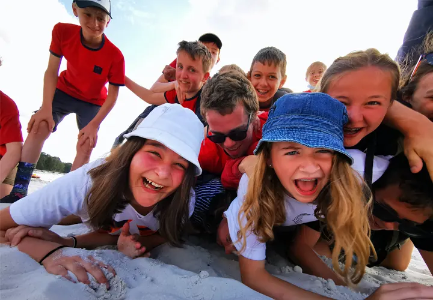
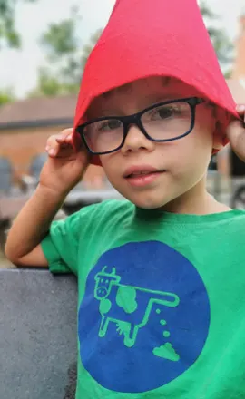
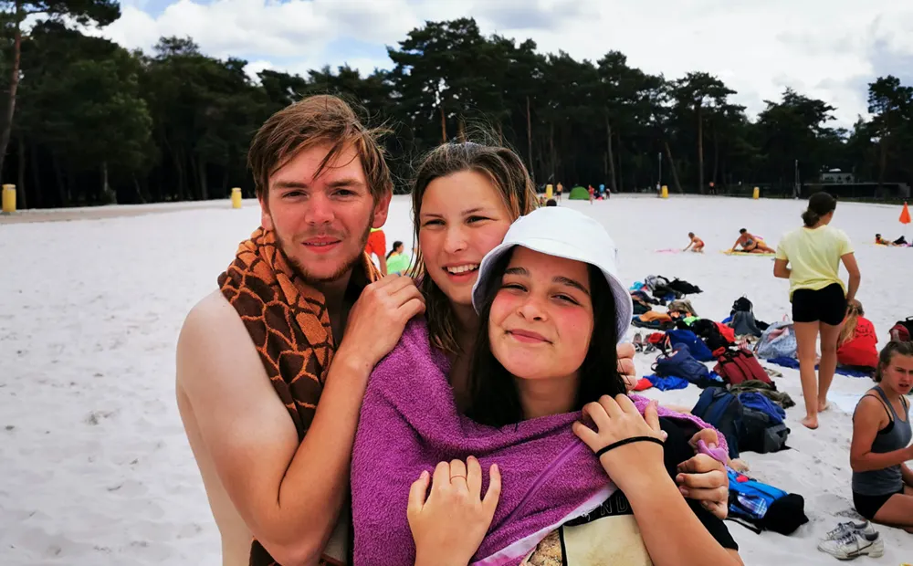
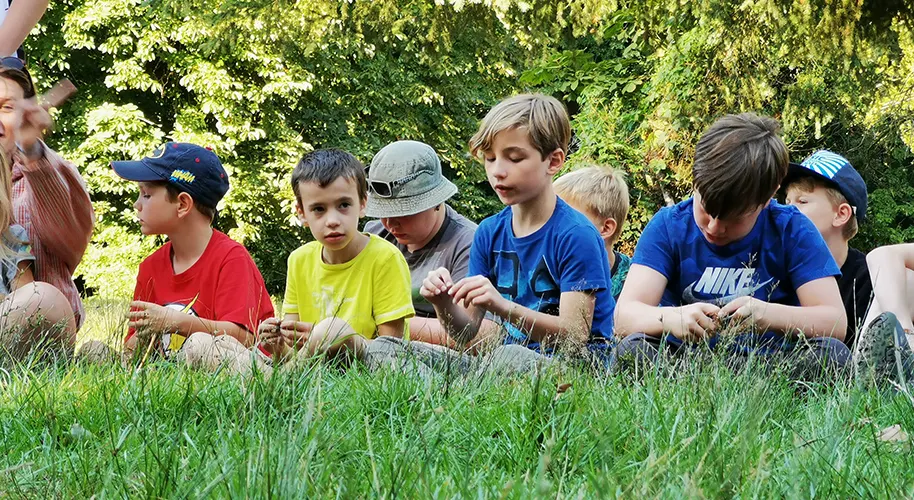
Inclusie
Chiro Halle stapt mee in het inclusieproject van SVZ (inclusieve jeugdbewegingen). Kinderen met een beperking zijn één keer per maand welkom op onze zondagsactiviteit.
Heeft je kind een beperking, maar zou het graag in een jeugdbeweging zitten? Dan is het zeker welkom! Neem contact op met de groepsleiding, dan bekijken we samen hoe we dit aanpakken.
Contacteer onsPraktisch
€40 per Chirojaar
Heb je een Kompas-pas van de stad Halle? Dan betaal je maar €10. Het lidgeld dekt onder meer je verzekering bij elke Chiroactiviteit. Je schrijft in en betaalt via Twizzit.
€1 per zondag
Elke zondag is er een drankje en een koekje. Daarvoor koop je 4-uurkaarten bij de leiding.
Onze lokalen liggen op het Jeugdcentrum Stroppen, Guido Gezellestraat, 1500 Halle. Rij de Guido Gezellestraat af richting jeugdcentrum en parkeer op de grote parking. Steek het voetbalveld over: onze lokalen zijn de linkerkant van het gebouw voor je.
Zodra je kind ingeschreven is, is het verzekerd. Gebeurt er een ongeval tijdens een Chiroactiviteit of op kamp, dan geeft de leiding je de verzekeringspapieren mee. Moet je pas later naar de dokter, contacteer dan de leiding.
Laat de dokter het formulier invullen en bezorg een kopie of scan aan de leiding. Wij regelen de rest.
Je hoeft je niet meteen in te schrijven: kom eerst een paar zondagen proberen, je bent dan al verzekerd via Chiro nationaal. Wil je blijven (en dat denken we wel), schrijf je dan in via Twizzit.
Verhuur
Buiten de Chiro-uren verhuurt vzw Lok'Halle onze lokalen aan jeugdgroepen voor kampen en weekends. De vzw ondersteunt Chiro Halle en zorgt voor het onderhoud van de lokalen en het terrein.
Contact
Voor algemene vragen mail je naar ons groepsadres of bel je de groepsleiding. Je kan de leiding ook gewoon aanspreken op zondag.